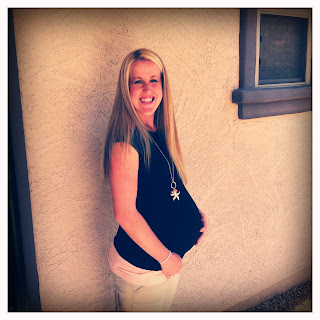

Recovered weblog entry
27

My sweet wife knows my memory just isn't what it used to be. She'll often speak of things in our past with color and description when all I can muster is a vague remembrance or hint.
Nevertheless, there are hundreds (if not thousands) of memories in this gray matter of mine that are indelibly etched because they're associated with that sweet, perfect girl.
And on this, her 27th birthday, I want to mark the day with just a few of those memories, in no particular order.
- New York City. Landing in the city of my mission meant something entirely different to me when she was by my side.
- Walking along the beach on our honeymoon, after we took public transportation.
- Baby #1. Walking around the hospital with her dressed in a yellow robe.
- I remember when she got her job at Ottawa. She didn't even need an interview.
- I used to have a scooter, and it was pouring rain. She picked me up from work.
- Our first visit to Lake Arrowhead. It was so fun to see where she visited when she was little.
- Our engagement pictures with her best friend. Her friend took them with a disposable camera and developed them in black and white. They were great.
- A kiss on the cheek under the basketball hoop on New Year's Eve.
- Our wedding day. She looked like a barbie doll and I still don't know how I'm so lucky.
- Rock climbing before we were married. In fact, we should go back.
- Disneyland. I think every trip was amazing. We tend to forget the outside world when we're there.
- Bagel date. Enough said.
- Baby # 2. She was so tough and decided that natural was the way to go from there on out.
- David Gray concert. I'd never really sung in front of her until that night.
- Lagoon! She didn't even get to go on a ride because our first baby was so young. But she loved it there, and it was fun to have her with me.
- A surprise visit to Snowbird. I arranged to have our son watched by my sister and drove up the mountain after lunch at Olive Garden. I told her it was just a quick trip but surprised her when I checked into the same room we had for our honeymoon in Utah.
- Driving home from Utah when I decided I needed Benadryl. Poor thing drove home the whole way.
- Billy Joel concert. We originally had expensive tickets to see his show, when he got into a car accident and went into rehab. The show was cancelled. A year later, he came back, but we had only enough money for the crappiest seats there. It was still a great show, because she was there.
- Proposing to her. Still glad she said yes, yes, yes.
- Baby # 3. It was such a blur! But my goodness, she was tough. No meds, 10 minute labor. And then there were five of us.
- Moving into our first apartment. Building new furniture, hanging pictures, decorating for Christmas, we loved that little 725 square foot apartment. She cried when we moved out.
- OT school. 4am study sessions, cadaver labs, rotations, and finals. Summa Cum Laude.
- One day shortly after our first was born, Jenna was hit in a parking lot. She called me, crying. It was her first and only accident Ever since then, my worry rises when she calls me crying!
- Her first marathon. 26.2 miles and a broken foot. She smiled when she crossed the finish line. I offered to get the car and pick her up, but she wanted to walk. Another mile.
- Our San Diego trip. It was supposed to be the cabin, but we drove south instead and used priceline everyday. Actually one of my favorite memories.
- Every walk we've ever been on.
- Before our first was born, she watched every Star Trek movie with me. Every. Single. One.
Again, just a few of those wonderful memories. I hope I didn't miss anything major.
I love this girl with all my heart.